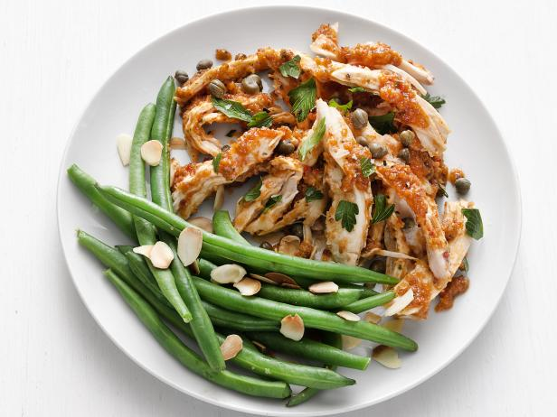

Choose Your Healthy
Breakfast / Lunch / Dinner


Greetings from our Healthy Kitchen!
Here are our 05 healthy recipies
01. Quinoa salad with roasted veggies
Ingredients:
Quinoa, fresh herbs (basil, parsley), olive oil, garlic, lemon juice, mixed veggies (bell peppers, cherry tomatoes and zucchini), salt and pepper.
Instructions:
Follow the directions on the package to cook the quinoa. Toss veggies in
olive oil and garlic. Stir in cooked quinoa, squeeze in lemon juice,
stir in herbs, and adjust seasoning.

2. Mango Salsa and Grilled Salmon
Ingredients:
lime juice, olive oil, salt, pepper, red onion, cilantro, and salmon fillets.
Instructions:
Cook salmon fillets on a grill until done. Dice the mango and combine it with the olive oil, lime juice, cilantro, and finely chopped red onion. Serve grilled salmon with salsa on top.

4. Enchiladas with Sweet Potato and Black Beans
Ingredients:
bell peppers, onions, cumin, chilli powder, sweet potatoes, black beans, corn tortillas, and cheese (optional).
Instructions:
Roast sweet potatoes and combine with onions, bell peppers, and black
beans that have been sautéed. Roll up the filled tortillas and put them
in a baking dish. coat with enchilada sauce and bake until heated
through.
5. Almonds and Berries with Yoghurt Parfait
Ingredients
Greek yoghurt, granola, honey, almonds, blueberries, and raspberries.
Instructions:
Arrange berries and Greek yoghurt in a glass. Top with granola and
almonds, then drizzle with honey.